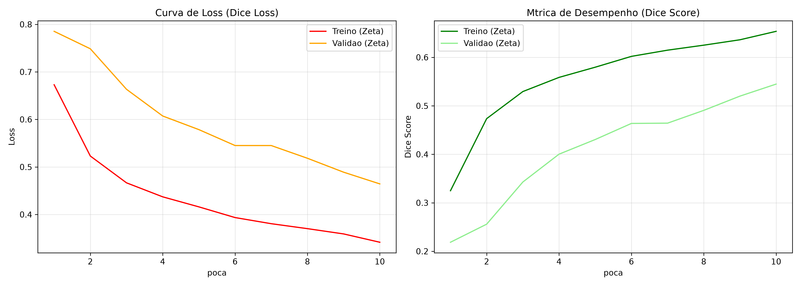
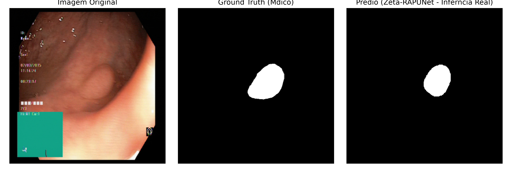

Cauã da Cunha Lira
Modelo: RAPUNet-Zeta (CNN - Encoder ResNet50V2 + Decoder Spatial Attention + Mish)
Dataset: Kvasir-SEG (Pólipos Gastrointestinais, 1.000 imagens médicas)
Resultados: accuracy: 0.9627 - loss: 0.3416 - dice coef: 0.6536

